Contents
- Práctica 5 - Prefijo cíclico
- Ejercicio 2.1 - Convolucion circular
- 2.1.1 Representación del espectro de x en dB
- 2.1.2 Representación de H en dB
- 2.1.3 Cálculo de la convolución lineal y representación del espectro de Y en dB
- 2.1.4 Cálculo de la convolución circular y representación del espectro de Yc en dB
- 2.1.5 Comparación de Y teórica, Y e Yc
- 2.1.6 Generación del prefijo cíclico
- 2.1.7 Obtención de Yc mediante convolución lineal
- Ejercicio 2.2 - Ecualizacion
- 2.2.1 Generación de una señal ofdm
- 2.2.2 Recepción de la señal transmitida tras pasar por el canal
- 2.2.3 Eliminación del periodo de guarda
- 2.2.4 Ecualización
- 2.2.5 Comparación de símbolos QPSK
- 2.2.6 Repetición con l_cp = 4
- 2.2.7 Repetición con l_cp = 16
Práctica 5 - Prefijo cíclico
Teresa González García y María José Medina Hernández
Ejercicio 2.1 - Convolucion circular
2.1.1 Representación del espectro de x en dB
% N puntos FFT N=256; % frecuencia de muestreo Fs=25600; % periodo de muestreo Ts=1/Fs; % señal de entrada aleatoria x=randi([-1,1],1,N); % X(f) -> FFT. Es necesario escalar las amplitudes /N para que la operación fft de % matlab coincida con la fórmula teórica. X=fft(x,N)/N; % vector f (paso Fs) -> mitad puntos NFFT espectro + y mitad - f=-N*Fs/2:Fs:N*Fs/2-Fs; %Se representa el espectro del canal en dbs con fftshift, para visualizar el resultado de la FFT con el componente de f=0 en el centro del espectro. figure plot (f/1000,20*log(abs(fftshift(X)))); title('Representacion abs(X(f)) en db'); xlabel('F(Khz)'); ylabel('Amplitud(db)'); grid on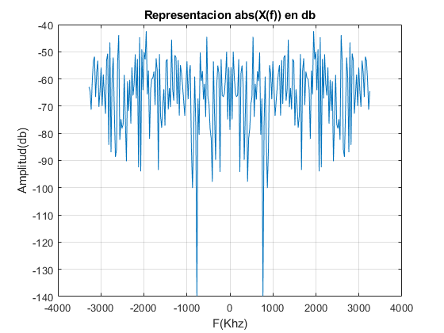
Se representa el espectro de una señal aleatoria (valores -1, 0,1) de N puntos. Como se puede observar, el espectro es simétrico, ya que las amplitudes (en valor absoluto) de las frecuencias de rango -N/2*Fs a 0 coiciden con las de las frecuencias de rango 0 a +N/2*Fs.
2.1.2 Representación de H en dB
% h[n] es un filtro digital de k=9 posiciones en total (en el dominio del tiempo % discreto). h=[-0.1,0.3,-0.5,0.7,-0.9,0.7, -0.5, 0.3, -0.1]; % H(f) es la respuesta al impulso del canal -> FFT. H=fft(h,N)/N; % Representacion |H(f)| el dominio de la frecuencia (db) figure plot (f/1000,20*log(abs(fftshift(H)))); title('Representacion |H(f)| en db'); xlabel('F(Khz)'); ylabel('|Amplitud(db)|'); grid on %Representacion |H(f)| en el dominio de la frecuencia (unidades naturales) figure plot(f/1000,abs(fftshift(H))); title('Representacion |H(f)|'); xlabel('F(Khz)'); ylabel('Amplitud'); grid on %Representacion |H(f)| en el dominio de la frecuencia (unidades naturales) figure plot(f/1000,abs(fftshift(H))); title('Representacion |H(f)|'); xlabel('F(Khz)'); ylabel('Amplitud'); grid on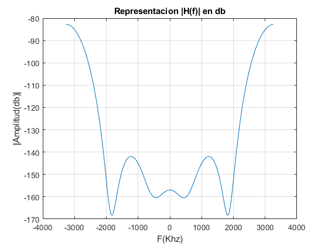 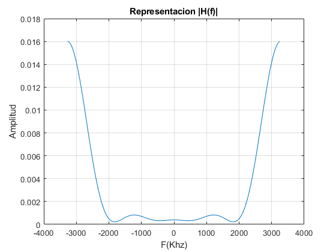
Como se puede observar, el espectro de nuevo es simétrico, y corresponde a un filtro que atenúa la señal de entrada principalmente en el rango de frecuencias de -2000Khz a 2000Khz. Deja pasar los tonos en f=-3000Khz y 3000Khz.
2.1.3 Cálculo de la convolución lineal y representación del espectro de Y en dB
y es la señal en recibida, es decir, x convolucionada con la respuesta al impulso del canal (h). El canal provocará un retardo y un escalado de amplitud (atenuación) de la señal de entrada x -> y=suma(ak*x[n-k]). convolucion lineal
y=conv(x,h); % y(f) = NFFT. Y=fft(y,N)/N; figure; plot (f/1000,20*log(abs(fftshift(Y)))); title('Representacion Y(f) en db'); xlabel('F(Khz)'); ylabel('Amplitud(db)'); grid on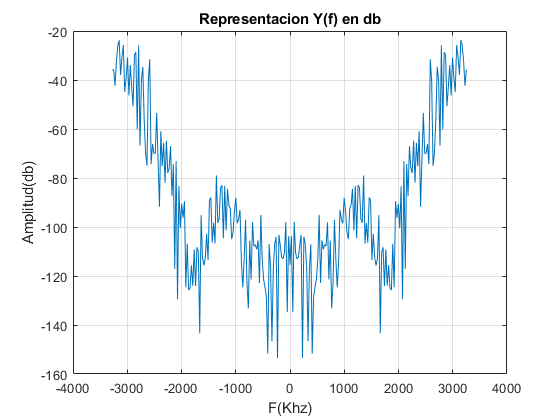
En la gráfica se puede observar como las amplitudes de Y(f) resultante se encuentran muy atenuadas en comparación con las amplitudes de X(f) (f=0, X(0)=-93db, Y(0)=-143 db, debido al efecto del canal). También se observa como las amplitudes en f=+-3000Khz son las menos atenuadas (-20db aprox). Se tiene en cuenta que la y[n] se encuentra retardada en el tiempo, por lo que está adelantada en frecuencia.
2.1.4 Cálculo de la convolución circular y representación del espectro de Yc en dB
Para calcular la convolucion circular de x*h, se ha utilizado la función cconv de MATLAB módulo N. Por defecto la función cconv devuleve un vector de longitud LENGTH(A)+LENGTH(B)-1, lo cual es equivalente a la convolución lineal. Sin embargo, nosotros necesitamos que sea de longitud N porque quremos que tenga la misma longitud que x = 256.
yc=cconv(x,h,N); Yc=fft(yc,N)/N; figure; plot (f/1000,20*log(abs(fftshift(Yc)))); title('Representacion Yc(f) en db'); xlabel('F(Khz)'); ylabel('Amplitud(db)'); grid on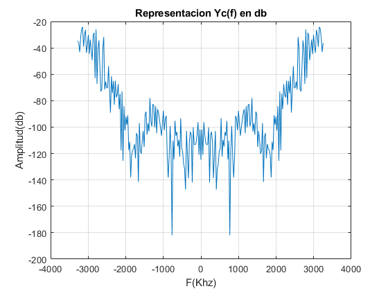
Se observan las mismas conclusiones en cuanto a atenuación que en el apartado anterior, pero el espectro es distinto en el rango de frecuencias +-2000Khz, porque las amplitudes resultantes de la convolución circular son distintos a los de la convolución lineal.
2.1.5 Comparación de Y teórica, Y e Yc
A continuación se comparan la Y teórica (X.*H*N) con la Y obtenida por
%convolución circular y la obtenida por convolución lineal. % Se escala X*H (*N), ya que X*H resulta en amplitudes /N^2. Así, se puede % comparar con las Y's (escaladas /N). Yteorica= (X.*H*N); dif_circular=sum(abs(Yc - Yteorica)); disp(['Diferencia X*H con convolucion circular: ' num2str(dif_circular)]); dif_lineal=sum(abs(Y-Yteorica)); disp(['Diferencia X*H con convolucion lineal: ' num2str(dif_lineal)]); disp(['Diferencia entre convolucion circular y lineal: ' num2str(abs(dif_circular-dif_lineal))]);
Diferencia X*H con convolucion circular: 4.6228e-15 Diferencia X*H con convolucion lineal: 0.65751 Diferencia entre convolucion circular y lineal: 0.65751
Se observa cómo la diferencia en el caso de la convolucion circular con la Yteorica es despreciable (orden 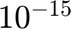), mientras que en el caso de la convolucion lineal es ligeramente mayor a la unidad.
%Representacion en frecuencia para la comparación Yteorica, Ylineal e %Ycircular. figure plot (f/1000,20*log(abs(Yteorica)), '-og'); hold on plot (f/1000,20*log(abs(Yc)),'-b'); hold on plot (f/1000,20*log(abs(Y)),'-r'); title('Comparativa entre Ys'); xlabel('F(Khz)'); ylabel('Amplitud(db)'); legend('Y teorica', 'Ycircular', 'Ylineal'); grid on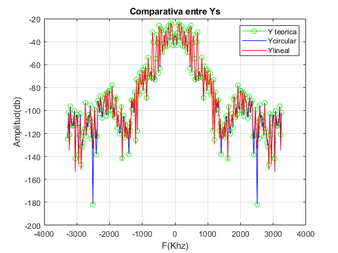
Como se puede observar, la Y teórica es idéntica a la Y obtenida por convolución
%circular (se ha representado la teórica con círculos verdes ya que al % ser idénticas quedaba tabada completamente), mientras que la Y obtenida % por convolución lineal presenta diferencias en los mínimos, los cuales llegan a valores % significativamente más bajos que los reales.
2.1.6 Generación del prefijo cíclico
Se extiende x para añadir un prefijo cíclico al comienzo de la señal. Este prefijo corresponde a una repetición de las últimas muestras de x. Su longitud debe ser mayor a la longitud de la respuesta al impulso del canal, en este caso length(h) = 9 muestras. Su valor óptimo será el mínimo que cumpla esta condición, para así utilizar la máxima velocidad de transmisión posible, por lo que para este caso corresponde a 9 muestras. Sin embargo, por motivos de claridad en la representación gráfica, para esta práctica se ha elegido un valor de 20 muestras.
L=20; % Longitud del prefijo cíclico % Prefijo con ultimos L elementos x pref= x(length(x)-L+1:length(x)); % Xextendida, añadiendo el prefijo al inicio. longitud=256+20=276. xext= [pref x]; % Representacion en el dominio del tiempo y comparación x's figure subplot(3, 1, 1) t = 0:Ts:(length(xext)-1)*(Ts); plot(t, [zeros(1, L) x]) title('x[n]') grid on subplot(3, 1, 2) plot(t, [pref, zeros(1, length(x))]) title('Prefijo cíclico[n]') grid on subplot(3, 1, 3) plot(t, xext) title('xext[n]') grid on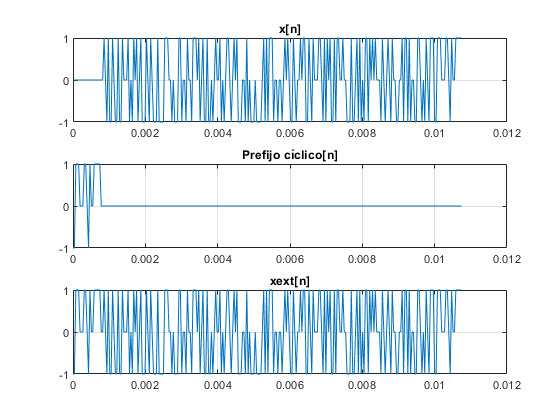
Como se puede observar, en el dominio temporal xext= x + prefijo. Para representar x y comparar, se añade zero-padding de tamaño L (longitud prefijo).
2.1.7 Obtención de Yc mediante convolución lineal
Realizamos la convolución lineal entre xext y h para obtener yext. Para obtener yc quitamos las primeras muestras (longitud de la extensión cíclica) y nos quedamos con las N siguientes. Al calular el error total entre yc calculada en el apartado anterior e yc calculada en este apartado (yc1) obtenemos un valor del orden de 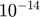, por lo que se puede afirmar que son iguales.
yext=conv(xext,h); % Quitamos las primeras muestras (longitud de la extensión cíclica) y nos % quedamos con las N siguientes. Longitud resultante=256. yc1=yext(length(pref)+1:length(pref)+N); disp(['Diferencia yc1 (convolucion lineal con prefijo) e yc (convolucion circular): ' num2str(sum(abs(yc1-yc)))]);
Diferencia yc1 (convolucion lineal con prefijo) e yc (convolucion circular): 7.9686e-14
La diferencia entre la señal resultante de la convolucion lineal sin el prefijo y la señal tras la convolucion circular es insignificante, del orden de . Por lo tanto, se puede concluir que son iguales, por lo que añadiendo un prefijo ciclico a la señal de entrada, la salida de la convolucion lineal(tras eliminar el prefijo)=convolucion circular.
A continuación se ha representado de forma gráfica el método de obtención de yc. Como se puede observar, se han descartado las L primeras muestras del vector y se ha tomado las N muestras siguientes.
% Representacion de forma gráfica t = 0:Ts:(length(yext)-1)*(Ts); figure subplot(2, 1, 1) plot(t, yext) title('Yextendida convolucion con prefijo L=20'); grid on xlabel('t(s)'); ylabel('yext(s)'); subplot(2,1,2) %añadir zero-padding para representarlo con el mismo tamaño y1=[zeros(1,length(pref)) yc1 zeros(1, length(yext)-(length(yc1)+length(pref)))]; plot(t, y1); title('Y1 (sin prefjo)'); xlabel('t(s)'); ylabel('y1(s)'); grid on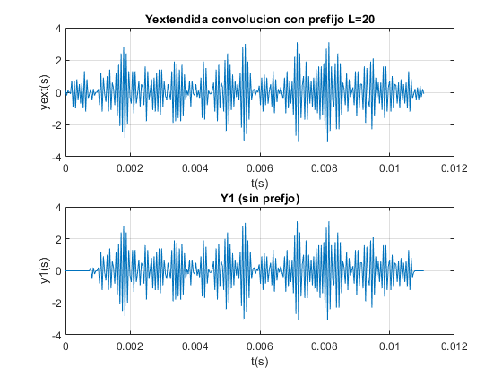
Como se puede observar en ambas gráficas, se ha pasado de la primera señal a la segunda, recortando un número de muestras al inicio igual al prefijo cíclico. En la representacion se ve cómo se ha añadido zero- padding al principio y al final del vector para conseguir el mismo tamaño que yext (284) y poder representarlo, aunque en realidad este vector no lleva padding. En el rango sin padding se puede ver como las amplitudes de ambas señales coinciden.
Ejercicio 2.2 - Ecualizacion
2.2.1 Generación de una señal ofdm
Generación de una señal ofdm con 10 subportadoras moduladas en QPSK y 100 símbolos ofdm. Se añade un prefijo cíclico de longitud 16 pero en lugar de utilzar las últimas muestras de x[n], se rellena con ceros para observar el efecto que tiene a la hora de recuperar la señal original.
NFFT = 256; % Tamaño de la FFT df = 200; % Separación entre portadoras Fs = NFFT*df; % Frecuencia de muestreo Nf = 10; % Numero de portadoras con datos m_ary = 4; % Indicador de modulacion digital de cada portadora Nofdm = 100; % Número de símbolos OFDM l_cp_a=16; % longitud del prefijo cíclico A %random bits a transmitir txbits = round(rand([1,log2(m_ary)*Nofdm*Nf])); mod = moduladorQPSK(txbits); % Generación de los símbolos QPSK mod = reshape(mod, [Nf, Nofdm]); % reordenación de los símbolos en una matriz de Nf x Nofdm % Modulación OFDM % Creación de la matriz X, de componentes espectrales, para la IFFT % Incialización a cero X = zeros(NFFT, Nofdm); % Asignación de los símbolos moduladores al espectro positivo X(29:38,:) = mod; % Asignación de los símbolos moduladores en orden inverso y conjugados al espectro negativo. Describa lo que realiza la función flipud. X(NFFT/2+2:NFFT,:) = flipud(conj(X(2:NFFT/2,:))); % Las funcion ifft de Matlab no multiplica por el número de muestras como se debería hacer de forma teórica, por % lo que se añade manualmente. x = ifft(X, NFFT, 'symmetric')*NFFT; cp_a=zeros(l_cp_a,Nofdm); % Prefijo ciclico de longitud 16 compuesto por ceros s = [cp_a ; x]; % Añadir prefijo ciclico s = reshape(s, [], 1); % Convertir a vector columna para su transmisión
El añadir un prefijo cíclico formado por ceros causa que en lugar de realizar una convolución circular, se realice una convolución lineal. Como se ha visto antes, X·H ≠ Y, (no se cumple con la operacion FFT) por lo que habrá errores en recepción. Por tanto, no se podrá recuperar la señal original mediante ecualización, deshaciendo el efecto del canal (X≠Y/H).
2.2.2 Recepción de la señal transmitida tras pasar por el canal
s_rx = conv(s, h);
%truncado a length(s);
s_rx = s_rx(1:end-length(h)+1);
2.2.3 Eliminación del periodo de guarda
Para ello se reagrupa la señal recibida
%de forma matricial y de eliminan las primeras filas, en particular de la %primera a la longitud del periodo de guarda. x_cp_rx_a = reshape(s_rx, NFFT+l_cp_a, Nofdm); % Eliminamos el prefijo cíclico x_rx_a = x_cp_rx_a(l_cp_a+(1:NFFT),:);
2.2.4 Ecualización
Ecualizacion mediante la división del espectro de la señal recibida entre la
%respuesta en frecuencia del canal. Ya que se utiliza un periodo de guarda, %si este es el adecuado (longitud prefijo ciclico > longitud del canal, y ultimos elementos de la señal de entrada), se cumple que X=Y/H. X_RX_A=fft(x_rx_a,NFFT)/NFFT; X_RX_EQ_A =( X_RX_A ./ repmat(H.',1,Nofdm))/NFFT; %dominio frecuencia = Y/H
A continuación se compara la señal transmitida con la señal recibida. Como es de esperar, puesto que se ha utilizado un prefijo cíclico compuesto por ceros, el error no es nulo. Además, es significativamente más grande el error en fase que en cuadratura (eje horizontal). Se demuestra así, que añadiendo un prefijo con todo 0's, no se puede recuperar la señal de entrada, ya que, como se demostró en el ejercicio 1, X·H ≠ Y.
disp(["Diferencia en recepción caso a: " sum(sum(X_RX_EQ_A - X))]) disp(["Diferencia en valor absoluto en recepción caso a: " abs(sum(sum(X_RX_EQ_A - X)))])
"Diferencia en recepción caso a: " "11.8787-7.34813e-16i"
"Diferencia en valor absoluto en…" "11.8787"
2.2.5 Comparación de símbolos QPSK
Comparación de los símbolos QPSK a la salida del modulador con los recibidos a la
%salida del ecualizador. Para ello primero es necesario recuperar deshacer %la estructura de OFDM para extraer las subportadoras que contienen %información. A continuación, estas subportadoras se reestructuran en un %vector fila y se compara con el vector de símbolos QPSK del transmisor. % Recuperar QPSK eq_a= X_RX_EQ_A(29:38,:); mod=reshape(mod, 1 ,[]); eq_a=reshape(eq_a, 1 ,[]); % Scatterplot scatterplot(mod); title('QPSK TX'); grid on scatterplot(eq_a); title('QPSK RX A'); grid on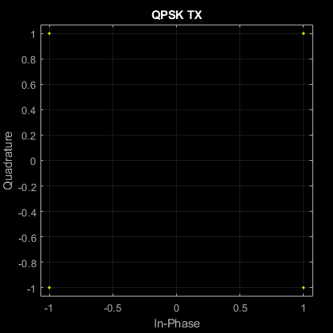 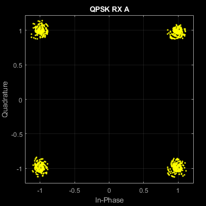
Como se puede observar en la gráfica, la correspondencia entre los símbolos no es perfecta a pesar de que no existía ruido en el canal. Como se ha explicado antes, esto se debe a que X·H ≠ Y. Al estar utilizando una convolución lineal en lugar de la circular. En particular, se generan en vez de puntos de la constelación, unos círculos de radio 0.1.
2.2.6 Repetición con l_cp = 4
Repetición de los pasos 1 a 5 esta vez con un prefijo cíclico de
%longitud 4, inferior a la longitud de la respuesta al impulso del canal, %lo que causará que no se pueda recuperar la señal transmitida tras %ecualizar ya que la longitud no es suficiente como para anular la %distorsión multicamino que se genera. Este prefijo cíclico se genera %tomando las l_cp últimas filas de la matriz x y añadiéndolas al principio %de esta. l_cp_b=4; cp_b = x(length(x)-l_cp_b+1:length(x), :); % Repetición de los pasos 1 a 5 para cp_b s = [cp_b ; x]; % 1. Añadir el prefijo cíclico s = reshape(s, [], 1); s_rx = conv(s, h); % 2. Simular el canal s_rx = s_rx(1:end-length(h)+1); x_cp_rx_b= reshape(s_rx, NFFT+l_cp_b, Nofdm); x_rx_b = x_cp_rx_b(l_cp_b+(1:NFFT),:); % 3. Eliminar el periodo de guarda X_RX_B=fft(x_rx_b,NFFT)/NFFT; % 4. Ecualizar X_RX_EQ_B =( X_RX_B ./ repmat(H.',1,Nofdm))/NFFT;
En este caso, el error es significativamente mayor que en el apartado anterior, ya que la longitud del prefijo cíclico es menor que la longitud del canal. La señal resultante tras eliminar el periodo de guarda y ecualizar ya no es la señal original.
disp(["Diferencia en recepción caso b: " sum(sum(X_RX_EQ_B - X))]) disp(["Diferencia en valor absoluto en recepción caso b: " abs(sum(sum(X_RX_EQ_B - X)))]) eq_b= X_RX_EQ_B(29:38,:); mod=reshape(mod, 1 ,[]); eq_b=reshape(eq_b, 1 ,[]); scatterplot(eq_b); title('QPSK RX B'); grid on
"Diferencia en recepción caso b: " "30.2677-3.32438e-15i"
"Diferencia en valor absoluto en…" "30.2677"
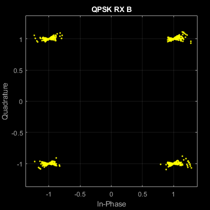 En este caso, en vez de generar círculos en torno a los valores de la constelación, se generan una especie de arco de circunferencia en torno a estos. Esto se debe a haber utilizado un prefijo cíclico de longitud menor a la respuesta al impulso del canal. El radio sigue siendo de aproximadamente 0.1 aunque, como se ha dicho, solo se encuentra en la zona más próxima a la horizontal, es decir, el error en fase es significativamente más alto que en cuadratura.
2.2.7 Repetición con l_cp = 16
Repeticiñon de los pasos 1 a 5 esta vez con un prefijo cíclico de
%longitud 16, superior a la longitud de la respuesta al impulso del canal, %lo que causará que no sí pueda recuperar la señal transmitida tras %ecualizar ya que la longitud es suficiente para anular la %distorsión multicamino que se genera. Este prefijo cíclico se genera %tomando las 16 últimas filas de la matriz x y añadiéndolas al principio %de esta. l_cp_c=16; cp_c = x(length(x)-l_cp_c+1:length(x), :);
Repetición de los pasos 1 a 5 para cp_c
s = [cp_c ; x]; % 1. Añadir el prefijo cíclico s = reshape(s, [], 1); s_rx = conv(s, h); % 2. Simular el canal s_rx = s_rx(1:end-length(h)+1); x_cp_rx_c= reshape(s_rx, NFFT+l_cp_c, Nofdm); x_rx_c = x_cp_rx_c(l_cp_c+(1:NFFT),:); % 3. Eliminar el periodo de guarda X_RX_C=fft(x_rx_c,NFFT)/NFFT; % 4. Ecualizar X_RX_EQ_C =( X_RX_C ./ repmat(H.',1,Nofdm))/NFFT;
En este caso, ya que la longitud del prefijo es > que la longitud del canal, y se añaden los ultimos l_cp_c elementos de la señal de entrada, tras la convolucion lineal, eliminar el periodo de guarda y ecualizar, la diferencia en recepcción es del orden de (módulo), por lo que podemos concluir que las señales son iguales. Gracias al prefijo, podemos recuperar mediante la ecualización (deshaciendo el efecto del canal con su inversa) la señal de transmisión en OFDM.
disp(["Diferencia en recepción caso c: " sum(sum(X_RX_EQ_C - X))]); disp(["Diferencia en valor absoluto en recepción caso c: " abs(sum(sum(X_RX_EQ_C - X)))]); eq_c= X_RX_EQ_C(29:38,:); mod=reshape(mod, 1 ,[]); eq_c=reshape(eq_c, 1 ,[]); scatterplot(eq_c); title('QPSK RX C'); grid on
"Diferencia en recepción caso c: " "-1.4938e-14-8.6836e-30i"
"Diferencia en valor absoluto en…" "1.4938e-14"
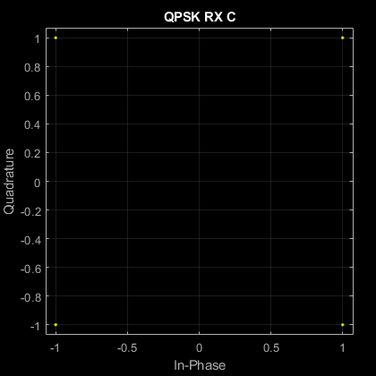 Esta vez la constelación obtenida es perfecta. Se demuestra así que en ausencia de ruido, utilizando un prefijo cíclico de longitud superior a la respuesta al impulso del canal, es posible recuperar a la prefección la señal orginal, eliminando la distorsión multitrayecto del canal en OFDM. Como es lógico, esto solo es posible si se cuenta con el comportamiento exacto de H. En la práctica tan solo se cuenta con una estimación, por lo que existirá error en recepción. Además, la respuesta al impulso no suele ser constante en el tiempo, por lo que no solo será necesario estimarla, sino que además se deberá actualizar periódicamente si se quiere asegurar su validez.